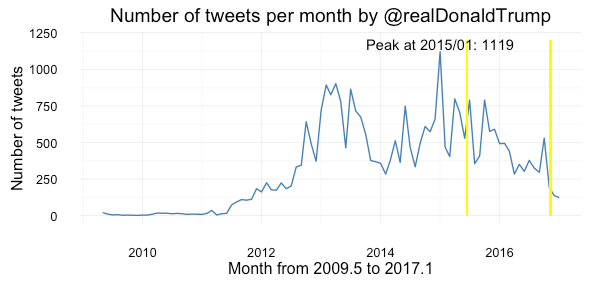
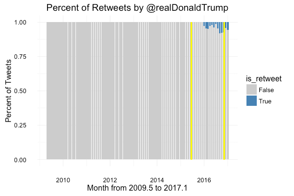
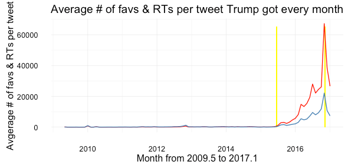
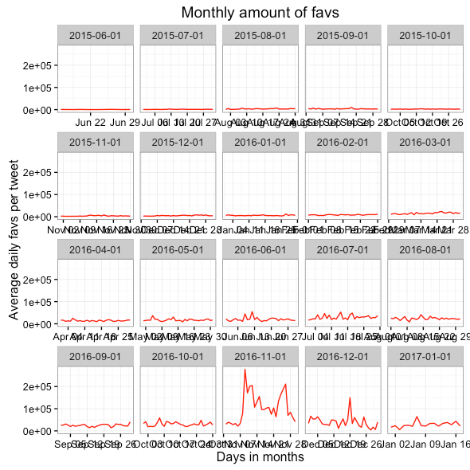
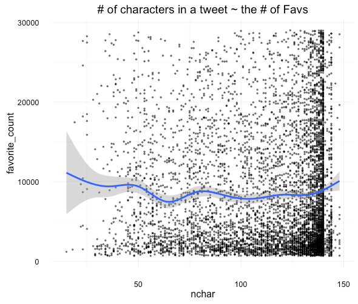
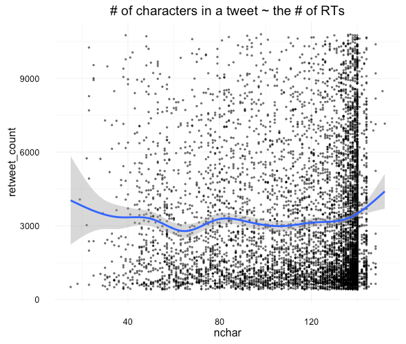
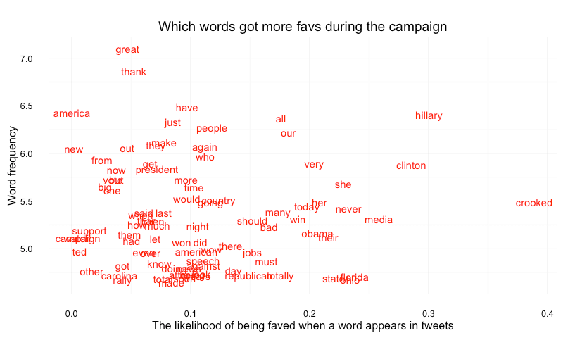
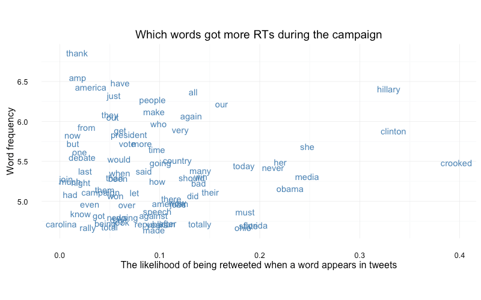
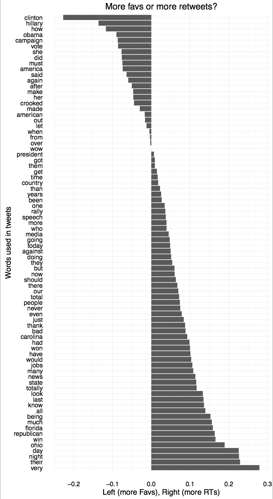

How @realDonaldTrump tweeted
Presented by Youyou Zhou
Background and data
The entire database of his tweets going back to 2009 has been archived and made searchable at:
Data exploration

1. How frequently does Trump tweet?
1.1 By month, since he joined Twitter

1.2 Tweeting frequency during the campaign and after he won the presidency

1.3 Retweeting frequency

2. What kind of tweets got more favs and retweets?
Red: Favorites; Blue: Retweets.
2.1 How many favs and rts did Trump got overtime?

2.2 Favs and RTs during the campaign and after he won the presidency


2.3 what kind of tweets got more favs and RTs?
2.3.1 Correlation to time of the day?


2.3.2 Correlation to the number of characters in a tweet?
For tweets whose counts of favs fall between 10% and 90% of the favorite counts of all tweets:

For tweets whose counts of RTs fall between 10% and 90% of the favorite counts of all tweets:

2.3.3 Which words appeared more frequently in tweets with more favs and rts?
Data processing steps:
- Tokenize words in a very rough way and get word frequency
- Assign weights to each word based on the retweets and favorites the tweet where the word is found received
- Filter out stop words
- Filter out words with fewer than 100 appearance (cutting words that only appear a few times)
- Filter to pick words that were faved or retweeted more than an average word was faved or retweeted.
End results:
88 words with high frequency and higher-than-average favs
83 words with high frequency and higher-than-average retweets.


2.4 Did people retweet and fav different content?
